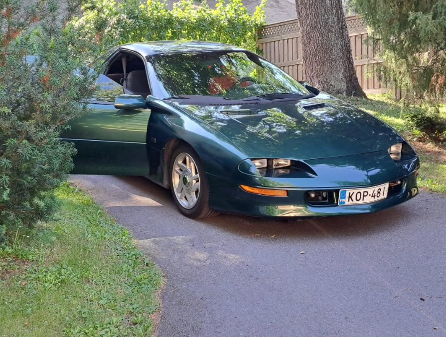

Juhan autotalli – enemmän kuin pelkkä talli
Camaro
Juha Omistaa oikein maskuliinisen menopelin. Wanhan kunnon Camaron! Tämä Camaro on Juhan rassaama ja täynnä Amerikkalaista voimaa!
Valitettavasti, Juhan väsäilyt hieman epäonnistuivat... Juha oli suorittamassa tieteellistä koetta Camarolle, kun koe alkoi se näytti starttaavan hyvin.
Mutta sitten tapahtui jotain kauheaa! Juhan koe meni pieleen. Camaro meni ihan untenmaille ja siinä se on nyt sitten seissyt.
Tarina kertoo että mystinen Camaro herää taas kun kevät koittaa, mutta se jää nähtäväksi sitten tosiaan.